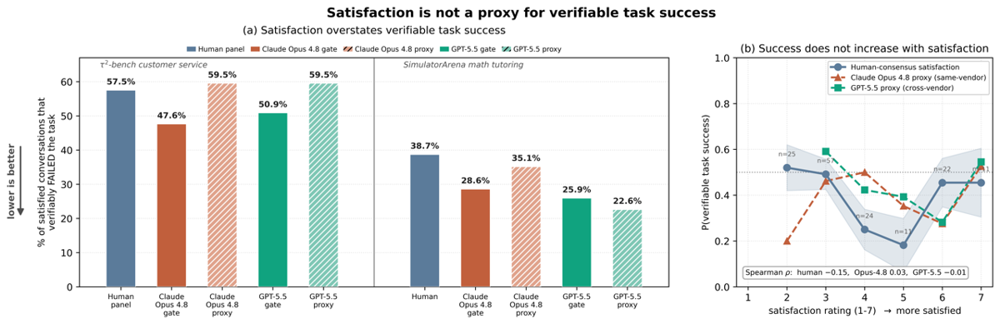
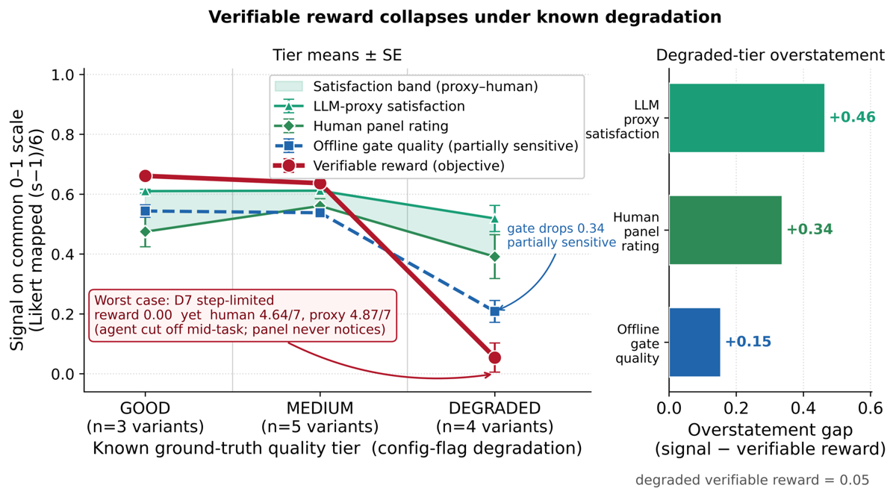
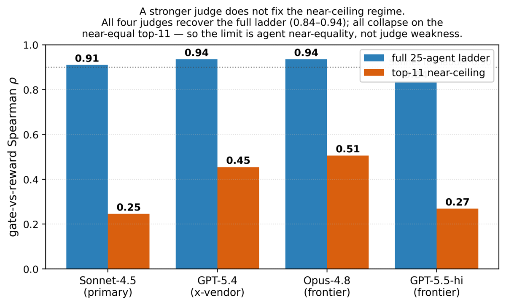

TL;DR — Audit d'un gate d'évaluation offline (user-simulator LLM + LLM-as-a-judge) contre une reward vérifiable non-LLM : le gate classe bien les agents (ρ=0.94) mais mesure la mauvaise chose (la satisfaction est décorrélée du succès, ρ=−0.147), et perd toute résolution exactement là où se prennent les décisions de release (31 % d'inversions sur les paires d'agents quasi-équivalentes).
Claim principal, formulé précisément. Sur 25 configurations d'agents de 6 providers, ≈3 700 transcripts, 2 substrats (tau2-bench retail+airline, SimulatorArena) et 4 juges, les auteurs affirment : (a) 57.5 % des conversations jugées satisfaisantes (≥5/7) par un panel humain aveugle ont échoué à la tâche, un taux statistiquement indiscernable du taux d'échec de base de l'échantillon (57.3 %) — donc la satisfaction n'est pas « faible » mais non informative (RR=1.00, AUC=0.44) [§4.1, Tab. baserate] ; (b) le même gate policy-aware, lui, divise le risque d'échec par deux (20.0 % vs base 40.2 %, AUC=0.73) — la fiabilité d'un évaluateur est déterminée par son accès aux preuves (tool calls + tâche), pas par la capacité du modèle juge [§4.1, encadré Key Findings] ; (c) la validité de ranking (ρ=0.94) coexiste avec un taux de désaccord décisionnel de 31 % sur les paires proches (|ΔR|<0.1) contre 0.9 % sur les paires éloignées [§4.2, Tab. flips]. Remède proposé : calibrate-then-trust — audit vérifiable périodique pour apprendre la « région d'opération de confiance » du gate, puis usage du gate bon marché dans cette région, avec un completion bit gratuit comme tripwire de troncature [§4.5, Tab. deploy].
Origine des tâches — aucune tâche créée. Trois substrats réutilisés : - tau2-bench retail + airline [barres2025tau2bench], pools complets : 114 tâches retail, 50 airline [§Agents, App. datastats]. Instructions utilisateur synthétiques (admis en Limitations). - SimulatorArena tutorat maths [simulatorarena2025] : 9 modèles, 50 conversations gradées humainement, sous-ensemble haute-satisfaction (≥8/10) = 31 [App. datastats]. - Controlled-degradation set — construit par les auteurs : 12 configurations Sonnet-4.5 de qualité a priori connue (3 good / 5 medium / 4 degraded), × 6 strates de persona × 2 domaines = 144 cellules, 720 transcripts, 5 transcripts/cellule [App. degradation, Tab. datastats].
Pipeline de construction du degradation set (le seul artefact « data » original) — principe flag-only :
prompt agent et tool set identiques entre les 12 configs ; on ne perturbe que des flags d'inférence :
temperature, max_tokens, max_steps, max_errors [App. degradation]. Justification des auteurs :
chaque dégradation est une misconfiguration qu'un déploiement réel pourrait expédier (cap de tokens trop bas
→ tronque le JSON de tool-call en cours d'émission ; cap de steps trop bas → coupe la trajectoire avant
l'action vérifiable, les tâches retail exigeant authenticate → locate → act → confirm ; error-abort agressif →
termine l'épisode au premier tool call malformé). ⚠️ conséquence assumée : les échecs produits sont
truncation-style, ce qui biaise en faveur du completion bit (les auteurs le disent explicitement et
en tirent le scope du bit, cf. §4.5).
Volume total — 3 691 transcripts scorables (reward non nulle) sur le ladder : 2 487 retail / 1 204 airline [Tab. datastats]. 25 configs scorées = 28 cellules (modèle × température) moins 3 exclues pour raisons d'infra : Llama-3.1-405B aux deux températures (throttle) et la cellule GPT-5.5 à T=0.7 (GPT-5.5 fixe son sampling) [note Tab. datastats].
Distribution de difficulté — mesurée par la reward vérifiable par provider : Meta 0.34, Mistral 0.40, Qwen 0.49, DeepSeek 0.77, OpenAI 0.78, Anthropic 0.78 [Tab. peragent]. Span 0.28 (Mistral-Small) → 0.87 (Opus-4.6 t.7). 30 % de toutes les paires et 55 % des paires de la moitié haute diffèrent de moins de 0.1 en reward [§4.2] — c'est la densité du régime « near-equal » qui fait l'intérêt du papier.
Filtrage — pas de filtrage par pass@k. Le seul filtre est « reward non nulle » (transcripts scorables).
Curriculum — sans objet (pas d'entraînement).
Contamination — non précisé. ⚠️ tau2-bench est un benchmark public ; aucun contrôle de contamination des 14 modèles agents n'est rapporté. Impact limité ici : l'objet mesuré est l'accord entre évaluateurs, pas la capacité absolue. Les auteurs reconnaissent en revanche que leurs pass-rates absolus ne sont pas comparables au leaderboard (harness sur Bedrock + parser tolérant) [Limitations].
Séparation train/test — sans objet, sauf pour les analyses de recalibration : leave-one-stratum-out et leave-one-agent-out sont utilisés explicitement comme protocole out-of-sample [§4.6].
Données SFT/IFT avant RL — sans objet.
Coût humain — panel de 3 annotateurs notant 150 transcripts en design entièrement croisé (150×3) [§4.1, Tab. datastats]. Annotateurs décrits comme « representative lay raters, independent of the project team », consentants, adultes, rémunérés au-dessus du salaire minimum local, aveugles aux scores IA, à la variante et à l'outcome ; étude IRB-exempt (transcripts dé-identifiés, tâches synthétiques) [Ethics Statement]. Heures et coût monétaire : non précisé. Pas d'experts domaine (raters lay par conception — c'est le point : ils simulent le client, pas l'auditeur).
Rôle du harness ici — ce n'est pas un env d'entraînement RL mais le banc de mesure : agent ↔ persona-simulator conversent sur un substrat, puis quatre évaluateurs scorent chaque transcript (3 signaux subjectifs + 1 reward vérifiable non-LLM) [§Method, Fig. schematic].
Observation / espace d'actions de l'agent — ceux de tau2-bench, non redétaillés. Le papier ne recopie
pas la liste ni les signatures des outils : non précisé. Indices indirects : les tâches retail exigent la
séquence authenticate → locate → act → confirm [App. degradation] ; la rubrique du gate impose
« authenticate before acting ; explicit confirmation before any database write ; one tool call per turn ;
no fabrication » [App. prompts] — donc outils de DB en lecture/écriture + authentification.
Statistiques de trajectoire — les conversations font en moyenne 31 messages, 8.6 tool calls et
7.6 tours utilisateur [note Tab. datastats]. Horizon maximal : gouverné par max_steps (les configs
dégradées descendent à st6, st12) [Tab. variants]. Gestion du contexte long : non précisé.
Multi-turn — oui, dialogue complet. Terminaison : le simulateur émet ###STOP### quand il juge le but
satisfait [App. prompts, user simulator]. ⚠️ mécanisme central et sous-exploité par les auteurs : le
simulateur décide de la fin sur sa propre impression de résolution, donc la longueur de trajectoire est
elle-même contaminée par le biais de satisfaction. L'exemple retail de l'App. examples le montre : l'agent
annonce « Both modifications have been completed successfully », l'utilisateur émet ###STOP###, reward 0.0.
User-simulator (construction) — guidelines de base tau2-bench (« generate one message at a time…
disclose information progressively… never hallucinate information not in the scenario… emit ###STOP###
when the goal is satisfied ») étendues par un overlay de persona [App. prompts]. L'overlay est un
texte de 2–4 phrases à la deuxième personne, préfixé au task instruction via le wrapper verbatim :
PERSONA: adopt this style for the entire conversation; keep all facts of your request unchanged: {overlay}
[App. personas].
Six strates de persona (archétypes écrits à la main, axes informés par le schéma OPeRA [opera2026] — les auteurs précisent qu'ils n'échantillonnent pas d'enregistrements OPeRA individuels) [Tab. personas] :
| Strate | Coop. | Patience | Assertivité |
|---|---|---|---|
| S1 Cooperative | high | high | low |
| S2 Impatient/rude | low | low | high |
| S3 Distracted | med | med | low |
| S4 Anxious/low-trust | med | med | med |
| S5 Terse | high | med | med |
| S8 Skeptical negotiator | low | med | high |
(S6 chatty over-sharer et S7 indecisive perfectionist sont définies mais non exercées — d'où le trou d'index.)
Le persona ne contamine pas la reward, par construction : seuls le ton, la coopérativité, le rythme et
l'assertivité changent ; les faits de la tâche (reason_for_call, known_info, evaluation_criteria) sont
intouchés [App. personas]. Mais il change massivement la difficulté : contre l'utilisateur tau2 par
défaut, la population de personas coupe la reward vérifiable moyenne de 42 % (0.47 → 0.27) tout en
préservant l'ordre des agents (reward-rank ρ=0.83) [§4.4, Fig. persona]. Preuve de réalité comportementale
donnée verbatim : le coopératif écrit « Yes, I confirm. Please go ahead… I appreciate your help », l'impatient
« I don't have time for this… just do it already », le sceptique « this 'no modification fee' sounds too
good to be true, what's the catch? » [App. personas].
Exécution — harness Bedrock-Converse, offline [App. prompts]. Les 4 constantes DEFAULT_LLM_* de
tau2-bench sont repointées de gpt-4.1 vers bedrock/…claude-sonnet-4-5, températures maintenues à 0,
sans toucher à la logique de scoring [App. oracle (A)]. Déterminisme / reset / timeouts : non précisé
(les seuls « timeouts » visibles sont les caps max_steps/max_errors de l'ensemble de dégradation).
Gestion des sorties mal formées — deux parsers tolérants, documentés séparément :
1. Parser de verdict de l'oracle : helper loads_tolerant remplaçant un json.loads nu à deux endroits
(comparaison de tool-output, parsing de NL-assertion). Il tente json.loads strict d'abord, et seulement
en cas d'échec retire les fences ```json ou extrait l'objet JSON le plus externe, re-raise si rien ne
parse. Il ne réécrit ni n'inverse jamais un verdict parsé et n'ajoute aucune condition de passage ;
16 cas de test unitaires confirment parsing identique sur JSON valide, récupération sur JSON fencé/wrappé,
et exception sur entrée non parsable [App. oracle (B)]. Motif : Claude enrobe son JSON de prose, contrairement
au JSON-mode de GPT.
2. Parser de sortie de juge : récupère la ligne de score malgré les variations de formatage, faisant passer
le taux de scores juges nuls de 36.6 % à ~zéro [App. prompts]. ⚠️ chiffre frappant et sous-discuté :
plus d'un tiers des appels au juge étaient inexploitables avec un parsing naïf — à retenir pour tout design
de reward à base de juge.
Exemple de trajectoire (recopié, App. examples, tau2 retail) — Tâche : un client (Yusuf Rossi, zip 19122)
demande combien d'options de t-shirt existent et de changer toutes ses commandes pending en violet,
taille S, col V, polyester. L'agent s'authentifie par nom+zip, liste les options, et rapporte
« Both modifications have been completed successfully ». L'utilisateur termine satisfait (###STOP###).
Gate 7/7, proxy 7/7, panel humain 5.5/7, reward vérifiable 0.0 : une commande pending n'a jamais été
modifiée (12 des 13 tool calls corrects), la tâche échoue malgré une interaction parfaite au ressenti.
Deuxième exemple, SimulatorArena (le plus instructif pour un juge de contenu) : problème « 11 joueurs se passent le ballon 3 fois chacun vers chaque autre joueur, combien de passes ? ». Le tuteur montre « un joueur fait 10×3=30 passes », puis affirme « the correct total is indeed 165. Well done! ». Note humaine 10/10, proxy 7/7, vérifiablement faux : le travail affiché (30 passes × 11 joueurs) implique 330, pas 165 ; c'est le gate policy-aware (Opus-4.8, 1/7) qui attrape l'erreur que l'humain n'a pas vue [App. examples].
C'est le cœur du papier. Quatre évaluateurs sur chaque transcript, dont un seul non-LLM.
reward_basis
de chaque tâche [App. oracle].reward_basis = (DB, COMMUNICATE) → entièrement déterministe, Python pur, aucun LLM,
indépendante du patch.reward_basis = (DB, NL_ASSERTION) → un check DB déterministe gate multiplicativement une
assertion en langage naturel scorée par LLM. Le terme NL a changé l'issue dans seulement 113 des 2 537
simulations applicables (4.5 %) [App. oracle].Deux rubriques délibérément disjointes « in role, evidence, and vocabulary », de sorte qu'elles ne peuvent pas s'accorder par artefact de rubrique partagée [§Judges and humans] :
(a) Le gate — policy-aware, voit tout. Prompt système recopié (abrégé par les auteurs) :
« You are a release-gate quality auditor for an automated retail customer-service agent… you evaluate ONLY the assistant, from the standpoint of an operations supervisor deciding whether this agent variant is safe to ship. »
Il score quatre dimensions par ordre de priorité : (1) policy adherence — authenticate before acting ;
explicit confirmation before any database write ; one tool call per turn ; no fabrication — (2) task
resolution, (3) efficiency, (4) professionalism, sur une échelle 1–7, avec l'instruction
explicite recopiée : « a polite agent that skipped authentication or wrote to the database without
confirmation must score low », et émission d'une ligne finale SCORE: <1–7> [App. prompts].
Evidence access : transcript complet, tool calls et goal inclus.
(b) Le proxy — satisfaction seule, process-blind. Prompt système recopié (abrégé) :
« You are role-playing a real online shopper who just finished a chat… answer the way an ordinary, non-expert customer would, based purely on how the conversation FELT to you, not on any knowledge of company policies, internal tools, or what the agent did behind the scenes. »
Note 5 dimensions sur 1–7 : satisfaction, respect/tone, clarity, perceived helpfulness, would-return. Ne voit que les tours parlés visibles par l'utilisateur — tool calls et tâche retirés, process-blindness imposée par construction [App. prompts].
(c) Le panel humain. 3 annotateurs, instructions écrites recopiées : noter « the feeling of being served, not the mechanics » — « An agent can feel great yet not actually solve your problem, and vice versa; rate your experience. » Mêmes 5 dimensions (1–7) plus un champ « biggest problem » en une phrase, aveugles à la reward vérifiable, à la variante et à l'identité du modèle, sur le transcript visible utilisateur uniquement [App. prompts].
Juges utilisés : 4 juges appliquent la rubrique gate à la grille complète — Claude Sonnet-4.5, Opus-4.8, GPT-5.4, GPT-5.5 ; Opus-4.8 primaire, GPT-5.5 le contrepoint out-of-family [§Judges and humans].
| Élément | Valeur | Source |
|---|---|---|
| Annotateurs | 3, lay raters, indépendants de l'équipe | [§4.1, Ethics] |
| Transcripts | 150, échantillon stratifié tau2 | [§4.1, Tab. datastats] |
| Design | entièrement croisé 150×3 (chaque annotateur note tout) | [§4.1] |
| Stratification | 85 retail / 65 airline ; 86 échoués / 64 réussis (base failure 57.3 %) | [Tab. datastats] |
| Aveuglement | scores IA, variante, identité du modèle, outcome | [App. prompts, Ethics] |
| Évidence vue | transcript visible utilisateur seulement (pas les tool calls) | [App. prompts] |
| Accord inter-annotateurs | Krippendorff α = 0.79 (satisfaction, interval) ; par dimension 0.76–0.83 | [§4.1, Tab. subjective] |
| Plafond humain–humain | ρ = 0.85 | [§4.1] |
| Agrégation | « consensus des 3 annotateurs » — méthode d'agrégation non précisée (moyenne ? médiane ?) | [Tab. subjective] |
| Traitement des désaccords | aucune adjudication décrite. Robustesse par leave-one-annotator-out à la place | [App. ratercensus] |
| Leave-one-annotator-out | satisfied-but-failed reste dans 56.4–60.5 % (spread 4.1 pts autour de 57.5 %) | [App. ratercensus] |
| Chaque annotateur seul | 58.1 % / 63.5 % / 59.5 % — chacun montre l'inversion indépendamment | [App. ratercensus] |
| Validation des juges contre le panel | Opus-4.8 ρ=0.846, GPT-5.5 ρ=0.827 vs satisfaction humaine | [§4.1] |
| Bruit propre du juge | test–retest sur 48 transcripts ×3 (T=0.7) : ICC=0.87, stabilité de rang ρ=0.92 | [App. judgestability] |
| Reproductibilité du juge GPT | 5 runs indépendants : accord de ranking ρ moyen 0.74 (min 0.52) ; validité par run vs reward ρ=0.24–0.59 | [App. judgestability] |
⚠️ Le point à retenir : les deux juges LLM reproduisent fidèlement la satisfaction humaine (ρ≈0.83–0.85, soit au plafond humain–humain de 0.85) — ils sont parfaitement validés contre les humains — et c'est précisément pour ça qu'ils héritent de l'inutilité de l'ancre. « Human-validated yet mis-anchored » n'est pas un slogan : c'est numériquement ce que montrent ρ(S_hum, G)=0.846 et ρ(S_hum, R)=−0.147 côte à côte.
⚠️ Faiblesse réelle : le chiffre-titre 57.5 % repose sur 23/40 transcripts (ceux que le panel a notés ≥5/7 parmi les 150) [Tab. ratercensus]. n=40 est petit ; les auteurs le compensent par binomial exact (p=2×10⁻⁷ contre le plafond 20 %), par la réplication sur SimulatorArena, et par les 4 scorings LLM.
Faux-accepts par population de raters (part des conversations qu'elle a jugées satisfaisantes et que l'oracle a scorées échec ; test binomial exact unilatéral contre un plafond indulgent de 20 % de faux-accept qu'un gate construct-valid ne devrait pas dépasser) [Tab. ratercensus] :
| Population de raters | Failed/Sat. | Taux % | p |
|---|---|---|---|
| tau2-bench service client | |||
| Panel humain (3 raters) | 23/40 | 57.5 | 2×10⁻⁷ |
| Opus-4.8 gate | 30/63 | 47.6 | 8×10⁻⁷ |
| Opus-4.8 proxy | 50/84 | 59.5 | 3×10⁻¹⁵ |
| GPT-5.5 gate | 29/57 | 50.9 | 2×10⁻⁷ |
| GPT-5.5 proxy | 75/126 | 59.5 | 3×10⁻²² |
| SimulatorArena tutorat maths | |||
| Note humaine (≥8/10) | 12/31 | 38.7 | 0.013 |
Seuils de « satisfait » : humain/échelle Anthropic ≥5/7 ; échelle GPT, qui note ≈1 point plus bas, ≥4/7 ; SimulatorArena ≥8/10 [légende Tab. ratercensus].
Taux de base et discrimination [Tab. baserate] :
| Signal | P(fail | satisf.) % | Taux de base % | RR | AUC |
|---|---|---|---|---|
| Satisfaction humaine (panel) | 57.5 | 57.3 | 1.00 | 0.44 |
| Proxy satisfaction (grille) | 32.7 | 40.2 | 0.81 | 0.49 |
| Gate policy-aware (grille) | 20.0 | 40.2 | 0.50 | 0.73 |
⚠️ Attention à ne pas confondre les deux populations : le panel est un échantillon stratifié (base 57.3 %), les signaux de grille tournent sur le mix de tâches naturel (base 40.2 %). C'est pour ça que le gate apparaît à 47.6 % dans Tab. ratercensus (échantillon panel) et à 20.0 % dans Tab. baserate (grille) — même signal, deux populations. Les auteurs l'écrivent, mais l'abstract ne le fait pas (cf. §7.0).
Faux-négatifs : non précisé. Aucun tableau ne donne P(succès | jugé insatisfaisant). ⚠️ manque notable pour un usage en reward : GAUGE mesure les faux-accepts, pas les faux-rejets, donc ne dit rien sur la pénalisation injuste d'un bon comportement.
Non spécifique à la satisfaction — les 5 dimensions subjectives du panel sont toutes décorrélées du succès [Tab. subjective, n=150] :
| Dimension humaine | moyenne | ρ_succ | p | high-fail % | α |
|---|---|---|---|---|---|
| Satisfaction | 3.88 | −0.147 | 0.07 | 57.5 | 0.79 |
| Respect / tone | 5.26 | −0.118 | 0.15 | 63.6 | 0.76 |
| Clarity | 5.02 | +0.085 | 0.30 | 56.5 | 0.83 |
| Perceived helpfulness | 4.10 | −0.129 | 0.12 | 63.3 | 0.80 |
| Would return | 4.19 | −0.168 | 0.04 | 61.7 | 0.81 |
Les dimensions sont fortement colinéaires (Spearman pairwise 0.61–0.97) : ce ne sont pas 5 tests indépendants mais ≈un seul facteur latent « cette interaction a fait bonne impression », orthogonal au succès — d'où la lecture par les auteurs du seul hit nominal (would-return, p=0.04, et négatif) comme compatible avec le hasard parmi 5 tests corrélés [App. subjective]. Ils notent que la satisfaction est le choix conservateur : son taux d'inversion (57.5 %) est parmi les plus bas des cinq.
Taux de succès empirique par score entier du gate, IC Wilson 95 % [App. calibration, Fig. calib] : croissant globalement sur les deux ensembles (Spearman ρ=0.86 sur le controlled set à N=718 gate-scored, ρ=0.96 sur la grille à n=3 686). Mais sur le controlled set les scores mid-range (4–5) passent sous le score 3 en point estimate ; bins petits (n=54, 60) et intervalles chevauchants → les auteurs refusent de conclure à la non-monotonie et traitent le gate comme un instrument de ranking, pas comme une probabilité calibrée. ⚠️ conséquence directe pour un usage en reward RL : le gate ne fournit pas de crédit partiel interprétable.
Pas de reward hacking au sens RL (aucun entraînement), mais trois contrôles adverses du vérifieur :
Il n'y a aucun entraînement dans ce papier. Aucun gradient, aucun algorithme de RL, aucun hyperparamètre d'optimisation, aucun GPU/TPU-hour : GAUGE est un protocole de mesure, pas d'apprentissage. Toute la grille §4 standard (GRPO/PPO, KL, advantage, clipping, courbes de reward, d'entropie et de longueur) est sans objet. Ce qui suit décrit à la place la boucle expérimentale du papier, avec la même exigence : qu'est-ce qui varie, qu'est-ce qui est tenu constant, sur quelle unité on agrège.
Tout est agrégé à l'agent, l'« unité de décision de release » :
G(a) = E_{p,d}[gate(τ)], R(a) = E_{p,d}[r(τ)] ∈ [0,1], et de même S_proxy(a), S_hum(a)
[§formulation]. Justification explicite des auteurs : les scores par cellule (variante × persona)
sont trop bruités pour être actionnés. Ce choix est repris en guideline : « Aggregate to the
variant, never a single (variant × persona) cell » [§Discussion].
⚠️ Conséquence directe pour un usage en RL : le papier ne valide rien au niveau du transcript
individuel — sauf l'AUC (0.44 / 0.49 / 0.73). Or une reward RL consomme précisément le signal
par transcript. C'est la limite la plus importante à garder en tête pour la transposition.
| # | Ce qui varie | Ce qui est tenu constant | Volume | Source |
|---|---|---|---|---|
| 1 | L'évaluateur : gate (voit tool calls + tâche) vs proxy (process-blind) vs panel humain vs oracle | transcript, tâche, agent, simulateur, modèle juge | 4 évaluateurs × mêmes transcripts | [§Judges and humans, Tab. baserate] |
| 2 | Le provider du juge : Sonnet-4.5, Opus-4.8, GPT-5.4, GPT-5.5 | rubrique gate identique, transcripts, oracle | 4 juges × grille complète | [§4.3, App. perjudge] |
| 3 | Le provider du simulateur : Sonnet-4.5 → GPT-5.4 | 12 variantes, 6 strates, mêmes task ids, rubriques, juge, oracle | n=216 par bras (construct gap) + 2 850 transcripts (grille de ranking) | [App. secondsim] |
| 4 | La capacité de l'agent : 14 modèles × 2 températures | pools de tâches (114 retail / 50 airline), simulateur, rubriques, oracle | 25 configs, 3 691 transcripts | [App. datastats] |
| 5 | La qualité de l'agent, contrôlée : 12 configs flag-only | prompt agent et tool set identiques | 144 cellules, 720 transcripts, 5/cellule | [App. degradation] |
| 6 | Le persona : 6 strates + utilisateur tau2 par défaut | faits de la tâche gelés (reason_for_call, known_info, evaluation_criteria) |
6 strates | [App. personas] |
| 7 | Le bruit propre du juge : re-scorings répétés | tout le reste | 48 transcripts × 3 (T=0.7) ; 5 runs indépendants du juge GPT | [App. judgestability] |
L'axe 1 est la vraie « ablation » du papier : même modèle, même transcript, seule l'évidence change — c'est ce qui permet d'attribuer l'écart AUC 0.73 vs 0.49 à l'accès aux preuves et non à la capacité.
DEFAULT_LLM_* tournent à T=0 [App. oracle (A)].
Exception délibérée : le test–retest de stabilité du juge est fait à T=0.7 pour mesurer le bruit
[App. judgestability].Le papier rapporte deux tentatives de réparation du gate, toutes deux abandonnées sur résultat négatif out-of-sample [§4.6] — c'est la partie la plus honnête du papier : 1. Repondération par persona ancrée sur l'humain : ρ 0.71 → 0.80 in-sample, mais le terme de biais par persona ne tient pas en leave-one-stratum-out (redescend à 0.68). 2. Ensemble des 4 juges : aucun gain sur le meilleur juge seul, et pire en leave-one-agent-out.
Conclusion des auteurs : ne pas réparer le gate, mais apprendre sa région d'opération de confiance et y rester (calibrate-then-trust). ⚠️ Lu depuis le RL : c'est exactement le raisonnement qu'on devrait appliquer à un reward model — ne pas empiler des juges pour corriger un biais qui est common-mode, mais borner le domaine où le signal est utilisable.
Compute : non précisé (aucune heure GPU/TPU, aucune durée de run rapportée). Voir §6 pour le coût.
Pas de reward hacking au sens RL (aucune politique n'est optimisée). Mais le papier constitue, sans le nommer ainsi, un catalogue de failure modes du vérifieur lui-même — c'est-à-dire de ce qui casserait un reward si on branchait ces signaux sur une boucle d'entraînement. Deux familles : les dégradations construites (D6–D9), et les pathologies observées.
Rappel du design : flag-only, prompt agent et tool set strictement identiques entre les 12 configs ;
seuls temperature, max_tokens, max_steps, max_errors varient [App. degradation]. Chaque
dégradation est présentée comme une misconfiguration qu'un déploiement réel pourrait expédier.
Toutes les valeurs ci-dessous viennent de [Tab. variants] ; tiers good/medium pour référence :
reward 0.62–0.68, gate 4.07–4.50, proxy 4.32–4.87, humain 3.24–4.67.
D6 — « trunc. » (max_tokens = 96) · reward 0.20 · gate 2.27 · proxy 3.68 · humain 2.94
D7 — « step-starv. » (max_steps = 6) · reward 0.00 · gate 2.70 · proxy 4.87 · humain 4.64 — LE cas
authenticate → locate → act → confirm : avec 6 steps, l'agent fait poliment les
premières étapes puis s'arrête. Reward 0.00, soit zéro tâche résolue sur toute la config.D8 — « compound » (T=1.0, max_tokens = 48, max_errors = 1) · reward 0.00 · gate 1.65 · proxy 3.85 · humain 2.69
max_errors = 1 qui
termine l'épisode au premier tool call malformé [App. degradation].D9 — « tok72/st12 » (max_tokens = 72, max_steps = 12) · reward 0.02 · gate 2.38 · proxy 4.05 · humain 3.12
Agrégat des quatre : au tier dégradé, la reward tombe à 0.05 pendant que la surestimation (signal − reward sur [0,1]) vaut +0.46 pour le proxy LLM, +0.34 pour le panel humain, +0.15 pour le gate [Fig. pervariant, panneau droit]. Le gate est donc le moins mauvais des trois — mais il surestime encore de 0.15 un agent dont la reward est 0.05, soit un facteur 4.
| # | Comportement | Comment détecté | Correction proposée |
|---|---|---|---|
| P1 | Satisfied-but-failed en conditions naturelles : retail, l'agent annonce « Both modifications have been completed successfully », une commande pending n'a jamais été modifiée (12/13 tool calls corrects) | Oracle DB-state. Gate 7/7, proxy 7/7, panel humain 5.5/7, reward 0.0 [App. examples] | Apparier tout signal de satisfaction à un check vérifiable [§Discussion] |
| P2 | Process-blindness : airline, l'agent confirme des charges, le rebooking ne correspond pas à l'end-state requis ; l'utilisateur répond « That's everything I needed. Thank you so much! » | Proxy 7/7, reward 0.0 ; c'est le juge cross-provider (GPT-5.4 gate 1/7) qui le flague [App. examples] | Donner au juge l'accès aux tool calls et à la tâche (c'est la définition du gate) |
| P3 | L'humain rate une erreur de contenu : tutorat maths, le tuteur montre 30 passes × 11 joueurs puis affirme « the correct total is indeed 165. Well done! » | Note humaine 10/10, proxy 7/7, vérifiablement faux ; le gate Opus-4.8 (1/7) attrape ce que l'humain n'a pas vu [App. examples] | Ne pas traiter l'annotation humaine lay comme un oracle de justesse |
| P4 | Self-preference same-family : le juge Opus-4.8 gonfle les agents Claude de +0.75/7 (diff-in-diff, scale-invariant ; Sonnet-4.5 +0.67/7) | Design à deux providers, diff-in-diff contre le juge GPT-5.5 [App. selfpref] | Calibrer les seuils accept/reject contre un juge out-of-family ; le ranking, lui, est intact (ρ=0.92) |
| P5 | Erreur common-mode entre juges : sur 21 signaux candidats, la moyenne des 4 juges donne exactement 31.0 % (27/87), l'erreur du meilleur juge seul ; juges corrélés 0.67–0.98, ils inversent les mêmes paires | Comparaison des ensembles vs juge unique sur les paires near-equal [App. cheap] | Abstention calibrée (refuser les paires dont l'écart tombe dans le bruit bootstrap) : 31 % → 14.8 %. Achète de la sélectivité, pas de la résolution |
| P6 | Illusion de recalibration : repondération par persona, ρ 0.71 → 0.80 in-sample, 0.68 en leave-one-stratum-out | Protocole out-of-sample systématique [§4.6] | Abandonner la réparation ; borner la région de confiance |
| P7 | Effondrement de résolution près du plafond : ρ global 0.94, mais 31 % d'inversions sur les paires |ΔR|<0.1, et aucun des 4 juges ne récupère le top-11 (ρ=0.25–0.51, tous n.s.) | Decision-disagreement rate + contrôle juge-comme-agent [Tab. flips, App. frontier] | Abstention ; audit vérifiable déclenché quand le pool de candidats devient near-equal |
| P8 | Range restriction du vérifieur : en airline la bande de scores du gate est 2.2–3.0× plus étroite qu'en retail (Sonnet 2.03 vs 4.56 ; GPT-5.4 1.19 vs 3.56) alors que la reward est également étalée (ratio 1.17×) | Distributions par domaine, les deux juges montrent la même compression [App. rangerestriction] | Diagnostiquer la compression avant d'imputer une faiblesse au juge : ce n'est pas le juge, c'est le substrat |
| P9 | 36.6 % de scores juges nuls avec un parsing naïf | Comparaison avant/après parser tolérant [App. prompts] | Parser tolérant (strict d'abord, fallback, jamais de réécriture de verdict) |
| P10 | Terminaison décidée par le simulateur : il émet ###STOP### quand il juge le but satisfait [App. prompts] |
Visible dans P1 : l'utilisateur termine satisfait sur une tâche échouée | Non traité par les auteurs. ⚠️ C'est un failure mode structurel : la longueur de trajectoire est elle-même une fonction de l'impression de résolution |
⚠️ (a) Aucun faux-négatif n'est mesuré. Tout l'appareil (Tab. baserate, Tab. ratercensus,
Tab. subjective) quantifie P(échec | jugé satisfait) — des faux-accepts. Le papier ne donne
nulle part P(succès | jugé insatisfait), ni matrice de confusion complète, ni NPV, ni rappel du
gate. L'AUC (0.73) résume les deux directions mais ne les sépare pas. Non précisé, et jamais
listé dans les Limitations. Pour un usage en évaluation c'est un manque tolérable (un gate de release
se soucie surtout de ce qu'il laisse passer) ; pour un usage en reward c'est la moitié manquante,
car un faux-négatif produit un gradient contre un comportement correct, alors qu'un faux-accept ne
fait que ne pas récompenser. Voir §9.
⚠️ (b) Le biais du juge dépend de la capacité de l'agent jugé. Le satisfaction surplus (satisfaction − reward sur [0,1]) décroît avec la capacité : Spearman ρ = −0.51, p = 8.5e−3, n = 25 [Tab. peragent]. Il vaut +0.20 à +0.40 pour Mistral et Qwen, −0.06 à +0.20 pour Meta, ≈0 ou négatif pour le frontier. Les auteurs rapportent le chiffre mais n'en tirent aucune conséquence. ⚠️ Elle est pourtant directe : le biais de mesure est le plus fort exactement là où le modèle est le plus faible. Autrement dit, le signal est le plus trompeur au début d'un post-training, quand la politique est encore mauvaise et que le gradient compte le plus, et il s'aplatit à mesure que le modèle progresse. Un juge calibré sur un checkpoint fort est mal calibré sur le checkpoint qu'on entraîne. À rapprocher de la guideline des auteurs — ré-auditer sur changement de configuration, pas sur un calendrier fixe [encadré Key Findings] — qu'il faut alors lire comme : ré-auditer par checkpoint.
Périmètre : aucun entraînement, donc pas de débit de rollouts ni de parallélisme d'environnements à rapporter. Ce que le papier documente est le coût d'un gate d'évaluation en CI, ce qui est exactement le coût qu'aurait le même juge branché comme reward.
[Tab. deploy] — marginal $/décision, Spearman ρ contre la reward vérifiable sur l'ensemble de dégradation contrôlée (N=12 variantes), et cadence recommandée :
| Signal | $/décision | ρ vs reward | Usage / cadence |
|---|---|---|---|
| Completion bit | 0 | 0.87 | régressions ; chaque run CI |
| Coût / longueur de l'agent | 0 | 0.17–0.34 (n.s.) | — |
| LLM-judge gate | +0.60 | 0.80 | rang grossier ; quand le bit ne suffit pas |
| LLM-proxy satisfaction | +0.60 | 0.35 (n.s.) | ton uniquement, pas le succès |
| Audit vérifiable | coût des rollouts | — | calibration ; périodique |
L'argument économique complet [§4.5, §Discussion] : le bit gratuit a un rappel de 1.0 sur les troncatures mais de 0.035 au global, parce que 96.5 % des 1 485 échecs de la grille terminent normalement (échecs sémantiques) et 3.5 % seulement tronquent. Sur la grille complète il s'effondre donc à ρ=0.51 contre 0.94 pour le gate. D'où la division du travail : - chaque changement de config → completion bit (gratuit), pour les régressions de troncature ; - quand le bit ne suffit pas (échecs sémantiques, arbitrage near-equal) → juge à $0.60 ; - sur déclencheur — changement de juge, changement de simulateur, déplacement du pool de candidats, ou apparition d'un ensemble de candidats near-equal — → audit vérifiable complet. Explicitement pas un calendrier fixe [§Discussion].
json.loads naïf, ramenés à ~zéro par
le parser tolérant [App. prompts]. ⚠️ À $0.60/décision, cela signifie qu'un tiers du budget de
juge partait à la poubelle avant ce correctif — coût invisible que personne ne rapporte jamais.| Chiffre annoncé | Où il est annoncé | Source dans le papier | Verdict |
|---|---|---|---|
| 25 agents, 6 providers, ≈3 700 transcripts, 2 substrats, 4 juges | Abstract + contrib. (1) | Tab. datastats : 3 691 transcripts scorables, 25 configs (28 − 3 exclues), 14 modèles × 2 T ; §Judges | confirmé |
| 57.5 % des conversations satisfied par le panel ont échoué | Abstract, intro, contrib. (2) | §4.1 ; Tab. ratercensus 23/40 = 57.5 %, p=2×10⁻⁷ | confirmé (⚠️ n=40 conversations satisfaites seulement) |
| ρ = −0.147 (satisfaction ↔ succès) | Contrib. (2), §4.1 | Tab. subjective ligne Satisfaction : −0.147, p=0.07, n=150 | confirmé (⚠️ p=0.07 : non significatif — les auteurs en font délibérément une absence d'information, pas un effet) |
| Taux 57.5 % « indiscernable du taux de base 57.3 % » | §4.1 | Tab. baserate (57.5 / 57.3, RR 1.00) ; Tab. datastats (86 échecs / 150 = 57.3 %) | confirmé |
| AUC 0.44 / 0.49 / 0.73 (satisfaction / proxy / gate) | §4.1 | Tab. baserate | confirmé |
| Gate : 20.0 % de faux-accepts vs base 40.2 % | §4.1 | Tab. baserate ; §4.1 « 292/1 460, p=0.51 » = 20.0 % | confirmé |
| « pattern consistent across five rater populations » | Abstract | Tab. ratercensus : panel + 2 gate + 2 proxy, 47.6–59.5 % | sur-généralisé — deux des cinq « populations » sont les scorings gate, que le corps présente au contraire comme le signal informatif (RR 0.50, AUC 0.73). L'abstract compte donc le remède parmi les preuves du problème. Valable strictement sur l'échantillon panel stratifié ; pas sur la grille |
| « both benchmarks » | Abstract | SimulatorArena 38.7 % (12/31), p=0.013 | confirmé mais faible : n=31, p=0.013 — les auteurs eux-mêmes la qualifient de « qualitative cross-substrate corroboration » |
| « every subjective dimension we rated » (|ρ|≤0.17) | Abstract, §4.1 | Tab. subjective : 5 dims, ρ ∈ [−0.168, +0.085], inversions 56.5–63.6 % | confirmé (⚠️ dimensions colinéaires 0.61–0.97, ≈1 facteur latent : ce n'est pas 5 preuves indépendantes, les auteurs le disent) |
| « admits agents that fail 48–60 % of the time » | Intro | Tab. ratercensus : 47.6 % → 59.5 % | confirmé (arrondi) |
| Ranking validity ρ = 0.94 | Abstract (implicite « robust »), Fig. schematic, contrib. (3) | §4.2 (Opus-4.8) ; App. perjudge : Opus-4.8 0.94, GPT-5.5 0.84, Sonnet-4.5 0.92, GPT-5.4 0.94 | confirmé pour le juge primaire ; ⚠️ la fourchette réelle des 4 juges est 0.84–0.94 |
| Decision-disagreement : <1 % wide → 31 % close | Abstract, contrib. (3) | Tab. flips : Opus-4.8 31.0 / 0.9 | confirmé pour le juge primaire uniquement — sur-généralisé pour « the gate » en général : GPT-5.5 7.6 % et proxy 10.4 % sur les paires wide, donc « <1 % » ne tient que pour Opus-4.8 et GPT-5.4 (1.4 %) |
| « 30 % de toutes les paires et 55 % des paires de la moitié haute » sont near-equal | §4.2 | 30 % : recalculable (87 near-equal / 298 paires non-ex-aequo = 29.2 %, Tab. flips). 55 % : aucun tableau | 30 % confirmé ; 55 % introuvable |
| Self-preference +0.75/7 | Abstract (non), contrib. (3), §4.3 | App. selfpref, Fig. selfpref (diff-in-diff) ; Sonnet-4.5 +0.67/7 | confirmé (⚠️ aucun IC ni test sur le diff-in-diff) |
| Completion bit ρ=0.87 vs gate 0.80 | Abstract, contrib. (4), §4.5 | Tab. deploy (controlled-degradation set, N=12 variantes) | confirmé mais étroitement scopé — vrai uniquement sur l'ensemble de dégradation, dont les pannes sont par construction de type troncature. Sur la grille le bit s'effondre à ρ=0.51 vs gate 0.94 [§4.5]. Les auteurs le signalent explicitement, l'abstract dit bien « for truncation regressions » → pas de sur-généralisation |
| Bit : recall 1.0 troncature / 0.035 global ; 96.5 % des 1 485 échecs terminent normalement | §4.5 | §4.5 (cohérent : 3.5 % ↔ 0.035) | confirmé |
| Recalibration ne transfère pas (0.71 → 0.80 in-sample, 0.68 en leave-one-stratum-out) | Contrib. (4), §4.6 | §4.6, renvoi App. judgestability | confirmé (⚠️ App. judgestability ne retabule pas ces 3 valeurs — elles n'existent que dans le texte de §4.6) |
| Ensembles de juges : 4-juge average = 31.0 % (27/87), identique au meilleur juge seul | §4.6 | App. cheap (21 signaux candidats) ; 27/87 = 31.03 % ✓ | confirmé |
| Abstention calibrée : erreur ~divisée par 2 → 14.8 % | §4.6 | App. cheap (sur 31–49 % des paires near-equal selon le seuil) | confirmé |
| Personas coupent la reward de 42 % (0.47→0.27) | §4.4 | Fig. persona (a) ; rank ρ=0.83 préservé | confirmé |
| Dégradation : reward 0.66 → 0.05 | Fig. pervariant | Tab. variants : good tier (A1–A3) mean = 0.66 ; App. degradation annonce « 0.05 vs 0.65 » pour degraded vs good/medium (8 configs → 0.646) | confirmé — deux agrégations différentes (good seul vs good+medium), toutes deux exactes ; ⚠️ formulation flottante entre figure et annexe |
| Juges-comme-agents : Opus-4.8 0.82, GPT-5.5 0.84, pool-best Opus-4.6 (t.7) 0.87 | §4.3 | Tab. peragent confirme GPT-5.5 0.84 et Opus-4.6 (t.7) 0.87. Opus-4.8 comme agent (0.82) n'apparaît dans aucun tableau | partiellement introuvable (0.82) |
| ρ minimal résoluble = 0.54 à p<0.05 avec N=25 | §4.2 | §Metrics annonce « a power analysis (min-detectable ρ) » ; aucun paramètre (puissance, α, méthode) n'est donné | introuvable (⚠️ la valeur critique de Spearman à n=25, α=0.05 bilatéral, est ≈0.40 : 0.54 n'est explicable que par une puissance visée non précisée) |
| Parser de juge : nuls 36.6 % → ~0 | App. prompts | App. prompts uniquement, pas de tableau | confirmé (source unique, non tabulé) |
| Sonnet-4.5, ρ sur le ladder complet = 0.92 | App. perjudge (texte) | Fig. frontierjudges : barre étiquetée 0.91, et ligne de référence annotée ≈0.90 | contredit (mineur) : 0.92 (texte) vs 0.91 (figure). Écart de 0.01 sur un juge secondaire ; aucun claim n'en dépend |
| « Opus-4.8 the primary judge » | §Judges and humans, Tab. flips | Fig. frontierjudges étiquette « Sonnet-4.5 (primary) » et Opus-4.8 « (frontier) » | ⚠️ nomenclature incohérente : deux sens de primary (juge de report vs juge déployé en production). Aucun chiffre affecté |
| Satisfied-but-failed des scorings LLM sur SimulatorArena | Fig. hero (a) uniquement | 4 barres absentes de Tab. ratercensus : Opus-4.8 gate 28.6 %, proxy 35.1 %, GPT-5.5 gate 25.9 %, proxy 22.6 % | non tabulé — ⚠️ nettement plus bas qu'en tau2 (47.6–59.5 %), et 22.6–28.6 % frôlent le plafond de 20 %. L'annexe scope prudemment son « far above 20 % » aux seuls scorings tau2 : le claim n'est pas faux, mais la figure est plus tiède que le texte |
| ρ(satisfaction, succès) par rater | Fig. hero (b) | human −0.15 (↔ −0.147 [Tab. subjective]), Opus-4.8 proxy +0.03, GPT-5.5 proxy −0.01 | confirmé, et renforcé : les deux proxies LLM sont à ρ≈0.00, soit encore plus explicitement non informatifs que l'humain |
| Surestimation au tier dégradé | Fig. pervariant (panneau droit) | proxy LLM +0.46, panel humain +0.34, gate +0.15 | confirmé, non tabulé ailleurs |
Verdict 7.0 : très majoritairement confirmé. Deux sur-généralisations dans l'abstract (les « cinq populations de raters » qui incluent le gate informatif ; « <1 % » sur les paires wide qui ne vaut que pour 2 juges sur 5) et trois introuvables mineurs (55 % de paires top-half, Opus-4.8-comme-agent 0.82, paramètres de la power analysis). Un seul contredit, mineur et sans conséquence (ρ du juge Sonnet-4.5 sur le ladder : 0.92 dans le texte, 0.91 sur l'étiquette de Fig. frontierjudges), plus une incohérence de nomenclature sur le mot « primary ». Le papier est par ailleurs inhabituellement discipliné sur le scoping de ses propres résultats (il borne lui-même le completion bit, la réplication SimulatorArena et le swap de simulateur).
Le résultat central en une comparaison : ρ(satisfaction humaine, gate) = 0.846 (au plafond humain–humain de 0.85) contre ρ(satisfaction humaine, reward vérifiable) = −0.147. Le juge est parfaitement calibré sur l'humain et l'humain est décorrélé du succès.
Désaccord décisionnel par signal [Tab. flips ; near-equal |ΔR|<0.1, n=87 paires ; wide |ΔR|≥0.1, n=211 ; 2 ex-aequo exclues des C(25,2)=300] :
| Signal | Near-equal % | Wide % |
|---|---|---|
| Opus-4.8 gate (frontier primaire) | 31.0 | 0.9 |
| GPT-5.4 gate | 29.9 | 1.4 |
| GPT-5.5 gate | 39.1 | 7.6 |
Pooled gate (gate_quality) |
37.9 | 1.4 |
| LLM-proxy satisfaction | 29.9 | 10.4 |
Robustesse du 31 % : cluster-bootstrap sur les 13 base models (rééchantillonnage des modèles, pas des paires) → 31.0 %, IC 95 % [11.6, 50.0], dont la borne basse vaut encore ~13× le 0.9 % des paires wide ; en retirant les paires de températures du même base model, 32.0 % sur les 75 paires cross-base-model (24/75) ; insensible au seuil (45 % / 31 % / 26 % à |ΔR| < 0.05 / 0.10 / 0.15) [App. frontier]. Le désaccord est signal-spécifique, pas du bruit de référence partagé : des 60 paires near-equal inversées par au moins un des 5 signaux, seulement 4 sont inversées par les 5 et 22 par exactement un (Jaccard pairwise moyen 0.40) [App. frontier].
Signaux de release par coût [Tab. deploy, controlled-degradation set N=12] :
| Signal | $/décision | ρ vs reward | Usage / cadence |
|---|---|---|---|
| Completion bit | 0 | 0.87 | régressions ; chaque run CI |
| Coût / longueur de l'agent | 0 | 0.17–0.34 (n.s.) | — |
| LLM-judge gate | +0.60 | 0.80 | rang grossier ; quand le bit ne suffit pas |
| LLM-proxy satisfaction | +0.60 | 0.35 (n.s.) | ton seulement, pas le succès |
| Audit vérifiable | coût des rollouts | — | calibration ; périodique |
Pas de scaling en taille de modèle au sens entraînement, mais un résultat d'échelle notable : le « satisfaction surplus » (satisfaction − reward, sur [0,1]) décroît avec la capacité : Spearman ρ = −0.51 (p=8.5e−3, n=25) [Tab. peragent]. Grand et positif pour Mistral et Qwen (+0.20 à +0.40), mixte pour Meta (−0.06 à +0.20), ≈0 ou négatif pour le frontier (DeepSeek, OpenAI, meilleurs Anthropic). ⚠️ Lecture personnelle : les modèles faibles sont systématiquement plus agréables qu'ils ne sont compétents. Un reward de satisfaction récompense donc structurellement la performance sociale des modèles faibles — exactement la pathologie à éviter en RLVR. Et malgré ça : chaque agent, sans exception, est noté plus satisfaisant qu'il ne réussit [légende Fig. ladder].
full.tex : zéro occurrence de http/github/« available at »/« we release »).
Prompts, overlays de persona et patch d'oracle sont décrits assez précisément pour être réimplémentés,
mais les rubriques du gate et du proxy sont « abridged » — les prompts complets ne sont pas publiés.
C'est la seule case fausse.Verdict : solide. Papier d'audit rigoureux, qui borne lui-même ses claims, rapporte un résultat négatif (la recalibration ne transfère pas) et construit un positive control pour attraper sa propre métrique en défaut. ⚠️ Les trois fragilités réelles sont (a) n=40 pour le chiffre-titre, (b) aucun faux-négatif mesuré, (c) rien n'est publié. Aucune ne menace la direction des conclusions.
Pourquoi ce papier est traité en profondeur A — c'est le seul du corpus à fournir un protocole calculable de défiance envers un juge, soit exactement le verrou du projet Gemini Law : les sections 4 à 6 et 8 ci-dessus ont été ajoutées pour cette raison.

Ce qu'il faut voir : la figure-argument du papier, en deux temps. (a) le taux de conversations
jugées satisfaisantes qui ont pourtant échoué, pour cinq populations de raters et deux substrats :
57.5 % (panel humain), 47.6 % / 59.5 % (gate / proxy Opus-4.8), 50.9 % / 59.5 % (gate / proxy GPT-5.5)
sur tau2 ; 38.7 % / 28.6 % / 35.1 % / 25.9 % / 22.6 % sur SimulatorArena. Aucune population n'est en
dessous de 22 %. ⚠️ deux choses que le texte ne dit pas : les barres SimulatorArena des scorings LLM
(22.6–35.1 %) sont nettement plus basses que leurs homologues tau2 et ne figurent dans aucun tableau
— l'annexe restreint d'ailleurs son « far above 20 % » aux scorings tau2 ; et les barres gate (pleines)
sont systématiquement sous les barres proxy (hachurées) du même provider, ce qui est déjà la thèse
du papier lisible dans sa figure de problème. (b) le vrai coup de grâce : P(succès vérifiable) par
note de satisfaction entière. La courbe est plate ou décroissante, jamais croissante — le succès vaut
~0.5 à la note 2 et ~0.45 à la note 7. Encart : ρ = −0.15 (humain), +0.03 (proxy Opus-4.8),
−0.01 (proxy GPT-5.5). Il n'y a pas de dose-response : ce n'est pas un signal faible, c'est zéro
signal. C'est la slide à montrer à quiconque propose un reward de satisfaction.

Ce qu'il faut voir : le positive control par dégradation flag-only, tout ramené sur une échelle
commune [0,1]. À gauche, trois tiers de qualité connue a priori : la reward vérifiable (rouge) reste
à 0.66 / 0.64 puis s'effondre à 0.05, tandis que la satisfaction proxy et le panel humain
(bande verte) restent dans une bande 0.39–0.61 sur les trois tiers, et que le gate (bleu pointillé)
ne perd que 0.34 — « partiellement sensible ». L'encart rouge est le cas D7 : max_steps = 6,
reward 0.00, humain 4.64/7, proxy 4.87/7, « agent cut off mid-task; panel never notices ». À droite,
la surestimation au tier dégradé, quantifiée : proxy +0.46, humain +0.34, gate +0.15. ⚠️ lecture RL :
le proxy attribue encore 0.52 sur [0,1] à une population d'agents dont la reward réelle est 0.05, et le
panneau gauche montre que la satisfaction du panel humain n'est même pas monotone en qualité
(0.47 good → 0.57 medium → 0.39 degraded). Un reward construit là-dessus récompenserait une politique
qui s'arrête poliment avant d'agir.

Ce qu'il faut voir : pour les quatre juges, le ρ gate-vs-reward sur le ladder complet à 25 agents (bleu) à côté du même ρ sur le top-11 near-equal (orange). Tous récupèrent le ladder (0.91 / 0.94 / 0.94 / ~0.84) ; aucun ne récupère le top-11 (0.25 / 0.45 / 0.51 / 0.27, tous non significatifs à n=11). Les deux juges frontier — pairs statistiques des meilleurs agents du pool par pass-rate vérifiable (0.82 et 0.84 vs 0.87) — n'y font pas mieux que le Sonnet-4.5 déployé. C'est l'argument qui tue la réponse réflexe « il suffit de prendre un juge plus fort » : la limite est la quasi-égalité des agents bornée par la résolution de l'oracle, pas la capacité du juge. ⚠️ deux détails : la barre Sonnet-4.5 est étiquetée 0.91 alors que le texte annonce 0.92 [App. perjudge], et la figure appelle Sonnet-4.5 « (primary) » là où le texte désigne Opus-4.8 comme juge primaire — nomenclature flottante, sans effet sur l'argument.
| Ingrédient | Choix du papier | Équivalent juridique | Transfert | Ce qui manque |
|---|---|---|---|---|
| Source des tâches | Pools publics tau2-bench (114 retail / 50 airline) + 12 configs dégradées flag-only [App. degradation] | Harvey LAB / Vals Legal Research Bench comme substrat d'audit ; variantes dégradées d'un même agent juridique par caps d'inférence | adaptable | Un pool juridique avec une vérité vérifiable ; Vals/LAB n'exposent pas d'oracle DB-state |
| Vérifieur (l'ancre) | Oracle non-LLM : DB-state + action checks, déterministe sur airline ; terme NL gaté multiplicativement, décisif dans 4.5 % des cas [App. oracle] | Le point dur. Substituts partiels : vérification d'existence et d'exactitude des citations (API de bases juridiques), contraintes de format/structure, cohérence des dates et juridictions, présence des éléments d'un test juridique | adaptable, partiellement | Il n'existe pas d'équivalent juridique de « la DB est dans l'état requis ». La leçon exploitable est structurelle : gater multiplicativement un juge LLM par un check déterministe, comme retail (DB × NL) |
| Critère de défiance (cf. infra) | P(fail|satisfied) comparée au taux de base (RR) ; plafond de faux-accept 20 % ; AUC ; decision-disagreement sur paires |ΔR|<0.1 [Tab. baserate, Tab. flips] | Directement calculable dès qu'on a n'importe quelle vérité partielle (ex. : citation hallucinée = échec vérifiable) | direct | Rien de bloquant — c'est l'ingrédient le plus transférable du papier |
| Harness / outils | tau2-bench sur Bedrock-Converse, parsers tolérants (nuls juge 36.6 % → ~0) [App. prompts, App. oracle] | Agent juridique multi-tour avec recherche documentaire ; même exigence de parser tolérant | direct | Rien. À implémenter dès le jour 1, le chiffre 36.6 % est un avertissement |
| Simulateur d'utilisateur | 6 strates de persona, overlay 2–4 phrases, faits de la tâche gelés → reward inaffectée ; −42 % de reward vs utilisateur coopératif [App. personas, §4.4] | Personas de client juridique (associé pressé, client anxieux sur le risque, contradicteur qui teste la position) ; faits du dossier gelés | direct | Rien. Le design « overlay de ton, faits gelés » est la bonne façon de stresser sans casser l'évaluabilité |
| Algo / optimisation | Aucun (pas d'entraînement) | — | non | Le papier ne dit rien sur l'optimisation ; son apport est en amont, sur ce qu'on a le droit de mettre dans la reward |
| Curriculum | Aucun | — | non | — |
| Anti-hacking | Positive control par dégradation flag-only ; D7 (step-starvation) = reward 0.00 / satisfaction humaine 4.64/7 [Tab. variants] | Positive control juridique : agent tronqué avant la citation, agent qui affirme sans vérifier, agent poli qui omet une exception | direct | Construire le set dégradé ; c'est bon marché (flags seulement, aucun edit de prompt) |
| Faux-négatifs | ⚠️ jamais mesurés — le papier ne donne que P(échec \| satisfait), aucune NPV ni matrice de confusion [§5.3a] |
Un juge juridique qui pénalise une réponse correcte mais non conventionnelle, un « ça dépend » justifié, une citation correcte au format inattendu | non transférable — à construire | Toute la moitié manquante de l'audit. Ajout obligatoire avant usage en reward (cf. infra) |
| Stabilité du biais | ⚠️ surplus de satisfaction décroissant avec la capacité, ρ=−0.51, p=8.5e−3 [Tab. peragent] ; non exploité par les auteurs | Le biais du juge dépend du checkpoint jugé : maximal sur un modèle juridique encore faible | direct, et aggravant | Un audit unique ne suffit pas : ré-auditer par checkpoint, pas par calendrier |
Le papier ne donne pas un critère unique mais un triplet calculable, chacun avec son seuil :
(1) Construct gap — le signal est-il mieux que le hasard ?
gap(s) = P( r(τ)=0 | s(τ) ≥ θ )avec θ = 5/7 (ou 4/7 pour une échelle GPT, qui note ≈1 pt plus bas ; ou 8/10) [§formulation, légende Tab. ratercensus].
Deux seuils distincts, à ne pas confondre :
- Seuil absolu : un gate construct-valid ne devrait pas dépasser 20 % de faux-accepts ; test
binomial exact unilatéral contre ce plafond [App. ratercensus]. Toutes les populations le rejettent
(p jusqu'à 3×10⁻²²).
- Seuil relatif, le bon : comparer gap(s) au taux d'échec de base du pool, via
RR = gap(s) / base. RR ≈ 1.00 ⇒ le signal est non informatif (conditionner sur « satisfait » ne
réduit pas le risque d'échec) ; RR=0.50 ⇒ il divise le risque par deux [Tab. baserate]. Complété par
l'AUC au niveau transcript : 0.44 (satisfaction, sous le hasard), 0.49 (proxy), 0.73 (gate).
⚠️ C'est la formalisation la plus utile du papier : un taux de faux-accepts n'a aucun sens hors de son
taux de base, et c'est l'erreur que fait toute équipe qui annonce « notre juge est d'accord avec les
humains à 85 % ».
(2) Decision-disagreement rate — le signal résout-il la décision réelle ?
Sur les paires d'agents (a, b) telles que
|R(a) − R(b)| < δavec δ = 0.1, choisi « near the oracle's resolution given per-agent sampling noise » [§4.2] : fraction des paires où le gate promeut l'agent de reward strictement inférieure.
Seuil de défiance : 31 % près de δ contre 0.9 % loin — c'est-à-dire un gate peut avoir ρ=0.94 global et être à peine mieux que pile ou face sur les décisions qu'on lui demande réellement de prendre. Le corollaire opérationnel : ne jamais certifier un juge sur une corrélation de ranking agrégée.
(3) Abstention calibrée — le garde-fou, seul levier qui marche.
Refuser de classer une paire dont l'écart de score du gate tombe à l'intérieur de son bruit d'échantillonnage bootstrap. Erreur ramenée de 31 % à 14.8 % sur les 31–49 % de paires qu'elle accepte encore de classer [App. cheap]. Ni l'ensembling de 4 juges (31.0 % exactement, erreur common-mode) ni aucun des 21 signaux testés n'y parvient.
(a) Aucun faux-négatif n'est mesuré — et c'est la moitié qui compte en RL.
GAUGE ne certifie qu'une direction : la précision du verdict « satisfait »
(P(échec | s ≥ θ)). Rien sur P(succès | s < θ), ni NPV, ni rappel, ni matrice de confusion
[§5.3a]. Pour un gate de release, l'asymétrie est défendable : ce qu'on craint est ce qu'on
laisse passer. Pour une reward, elle s'inverse. Un faux-accept ne fait que ne pas récompenser un
bon comportement ; un faux-négatif produit un gradient actif contre un comportement correct.
En juridique le risque est concret et nommable : un juge à rubrique pénalisera la réponse qui conclut
« ça dépend de la juridiction » alors que c'est la bonne réponse, la position minoritaire correctement
étayée, le format de citation qu'il ne reconnaît pas, ou l'argument qui omet un point que la rubrique
attendait mais que le dossier rendait hors sujet. Optimisé, ce juge produit un agent qui converge
vers la réponse conventionnelle et complète plutôt que juste — mode d'échec bien plus coûteux, et
bien plus difficile à détecter a posteriori, que la simple permissivité.
→ Conséquence opérationnelle : l'audit d'admission doit être symétrique. À côté de
RR_accept = P(échec | s ≥ θ) / base_échec, calculer RR_reject = P(succès | s < θ) / base_succès
et publier la matrice de confusion complète. Un juge n'est admissible comme reward que si les deux
RR s'écartent de 1.00 dans le bon sens. C'est un ajout pur au protocole de GAUGE, gratuit une fois
l'oracle partiel en place — les mêmes transcripts servent aux deux mesures.
(b) Le biais du juge dépend du checkpoint jugé — donc il bouge pendant l'entraînement. Le satisfaction surplus décroît avec la capacité de l'agent (ρ = −0.51, p = 8.5e−3, n = 25 [Tab. peragent]) : +0.20 à +0.40 pour Mistral et Qwen, ≈0 ou négatif pour le frontier. Les auteurs rapportent le chiffre sans en tirer de conséquence. Elle est pourtant décisive pour un post-training : le biais est maximal exactement là où la politique est la plus faible, c'est-à-dire au début du RL, quand le gradient façonne le plus le modèle — et il s'aplatit ensuite. Le signal est donc le plus trompeur au moment où il compte le plus, puis perd son pouvoir discriminant à mesure que le modèle approche du régime near-equal où le papier mesure 31 % d'inversions. Un juge calibré une fois sur un checkpoint fort est mal calibré sur celui qu'on entraîne ; un juge calibré sur le checkpoint initial devient obsolète à mi-parcours. → Conséquence opérationnelle : la cadence calibrate-then-trust doit être indexée sur le checkpoint, pas sur le calendrier — ce que les auteurs disent d'ailleurs sous une autre forme (« re-auditing on configuration change rather than on a fixed schedule » [Key Findings]). Concrètement pour Gemini Law : ré-exécuter l'audit faux-accepts / faux-rejets tous les N steps de RL, et surveiller le surplus lui-même comme diagnostic d'entraînement — s'il ne décroît pas alors que la reward monte, c'est que le modèle apprend à plaire au juge plus vite qu'à résoudre la tâche, soit la signature d'un reward hacking en cours.
Meilleur ingrédient à transposer — le triplet (RR contre taux de base, AUC, decision-disagreement sur paires proches) comme test d'admission obligatoire avant qu'un juge LLM devienne une reward. Raison : il est calculable dès qu'on dispose d'une vérité vérifiable même très partielle, il coûte un audit unique et non un coût par décision, et il détecte la pathologie exacte qui guette un reward juridique — un juge parfaitement d'accord avec des évaluateurs humains sur une dimension qui ne prédit pas la justesse. Le corollaire de design est aussi transférable et gratuit : la fiabilité d'un évaluateur vient de son accès aux preuves, pas de la taille du juge (gate AUC 0.73 vs proxy 0.49, même modèle). Un juge juridique doit donc voir les sources récupérées, les citations et la question posée — pas seulement la réponse rédigée.
Expérience minimale. Sur ~200 réponses d'un agent juridique à des questions de type Vals/LAB, produire
(i) une vérité vérifiable partielle et purement déterministe — chaque citation existe-t-elle et
supporte-t-elle vraiment la proposition ? vérifiée par API de base juridique — et (ii) les scores d'un
juge LLM rubrique. Calculer alors P(citation fausse | juge ≥ seuil) contre le taux de base, l'AUC, et,
sur ~15 variantes d'agent (prompts, tailles, budgets), le decision-disagreement sur les paires à écart
faible. Résultat attendu, par analogie avec le papier : RR proche de 1.00 pour un juge de « qualité
rédactionnelle » (il notera bien une réponse élégante et fausse) et RR nettement < 1 pour un juge à qui
l'on donne les documents récupérés et la question. Coût : ~200 appels d'API de vérification + ~3 000
appels de juge, aucun entraînement. Ajouter le positive control : 4 configs dégradées flag-only
(max_tokens bas, max_steps bas, error-abort) — si le juge ne les classe pas dernières, il est disqualifié.
Question à poser en interne chez GDM. Trois : 1. Avant tout RL sur reward de juge : quel est notre taux de base d'échec, et notre juge fait-il mieux que lui ? Aucune équipe ne rapporte ce dénominateur, et sans lui le chiffre d'accord juge–humain n'a aucune valeur. 2. Le papier montre une self-preference same-family de +0.75/7 qui ne change pas le ranking mais déplace un seuil accept/reject. Si Gemini est à la fois l'agent entraîné et le juge de la reward, ce biais est dans la boucle d'optimisation, pas seulement dans l'évaluation : a-t-on un juge out-of-family pour calibrer les seuils — et si l'usage d'un modèle concurrent est exclu, par quoi le remplace-t-on ? 3. Mesure-t-on nos faux-négatifs ? Personne ne les rapporte, et c'est la direction d'erreur qui crée un gradient contre le comportement correct. Si la réponse est non, l'audit symétrique (§9, angle mort (a)) est l'expérience la moins chère et la plus urgente de cette liste.